01
OpenAI 承诺投入 200 万美元研究儿童 AI 安全
OpenAI 宣布投入 200 万美元支持 AI 与儿童安全研究，称相关工作将支持衡量青少年风险与机会的共享工具。随着对话系统进入教育与家庭场景，这一投入具有现实意义。资金和测量基础设施有助于建立证据，但承诺本身并不代表某项产品风险已经解决。
每天一次，过滤 AI 噪音
OpenAI 宣布投入 200 万美元支持 AI 与儿童安全研究，称相关工作将支持衡量青少年风险与机会的共享工具。随着对话系统进入教育与家庭场景，这一投入具有现实意义。资金和测量基础设施有助于建立证据，但承诺本身并不代表某项产品风险已经解决。
OpenAI 对 JioStar 首席架构师 Vijay Seshadri 的访谈讨论了面向五亿用户规模的 AI 内容发现。介绍重点包括评估、护栏以及将 AI 投入生产的工作。这提供了大型消费平台的部署视角，但现有摘要没有量化转化率、成本节省或可靠性指标，应作为运营经验阅读。
英伟达宣布黄仁勋立即辞去总裁、首席执行官和董事职务。财务负责人 Colette Kress 兼任临时 CEO，Harvey C. Jones 出任董事长。董事会将从内部及外部寻找正式继任者，并表示客户承诺与产品路线图预计不受影响。这是影响 AI 基础设施生态的重要人事变化，但公告并未确认任何具体模型项目的调整。
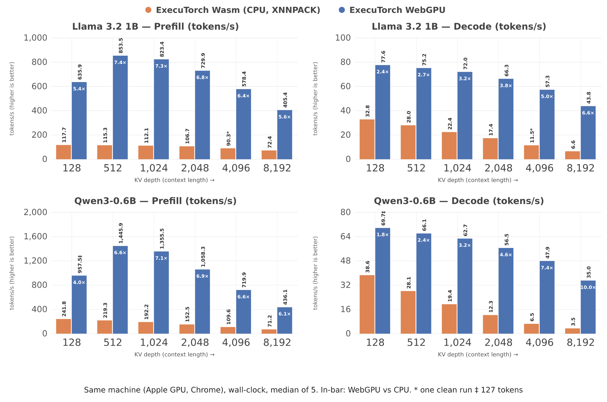
PyTorch 介绍了新的 ExecuTorch WebGPU 后端，可在兼容浏览器中直接运行导出的 .pte 模型，并在设备本地完成推理。示例涵盖小型语言模型、视觉、语音及部分端侧适配流程。团队在 Apple M1 Pro 和 Chrome 上报告了相对 WebAssembly CPU 后端的速度提升，但该后端仍处早期阶段，部署时需关注算子覆盖与设备差异。
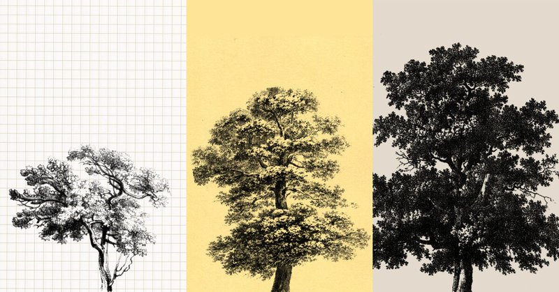
Anthropic 官方账号宣布首次公开募股，并提供发行资料链接。公告称公司已向美国证券交易委员会提交包含招股说明书的注册文件，提醒投资者查阅相关材料。这是前沿 AI 开发商的重要资本市场进展。所采集公告没有给出发行价格、估值或交易日期，因此不能据此推断这些细节。
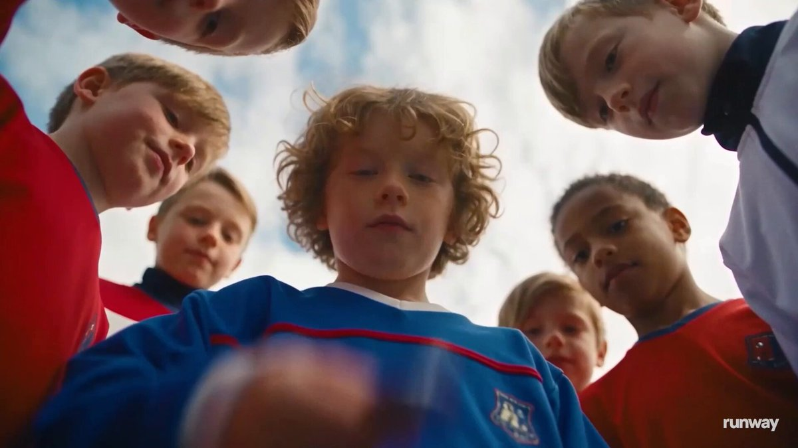
Runway 宣布支持通过 Tripo H3.1 从文本或图片生成 3D 模型，也可上传已有模型。用户能够选择角度，将视图作为图像或视频生成的参考，并导出模型用于其他 3D 工具。这使素材制作与镜头规划更紧密结合；公告未提供独立质量对比或性能数据。
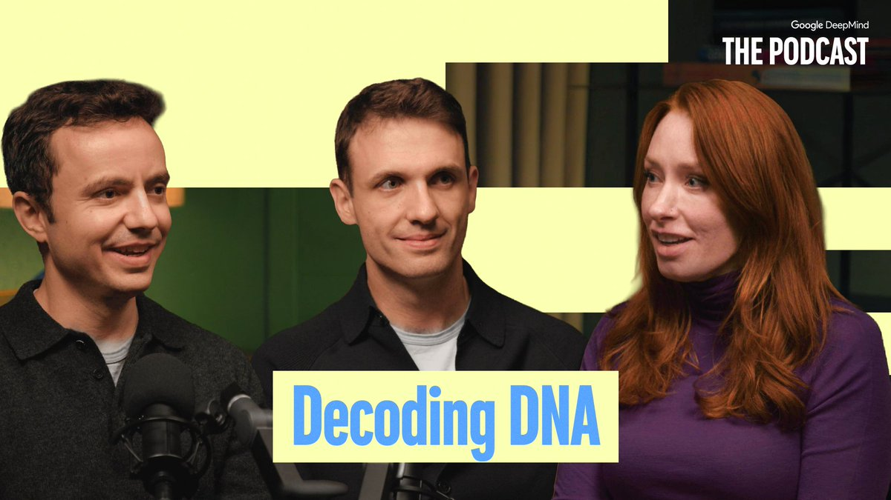
Google DeepMind 通过播客介绍 AlphaGenome 2 如何辅助寻找罕见病的遗传原因，称其可帮助科学家研究数百万种 DNA 变化。这属于基因组学研究工具的应用介绍，不应理解为临床诊断能力的证明。该帖没有给出验证指标、患者治疗结果或监管批准信息。
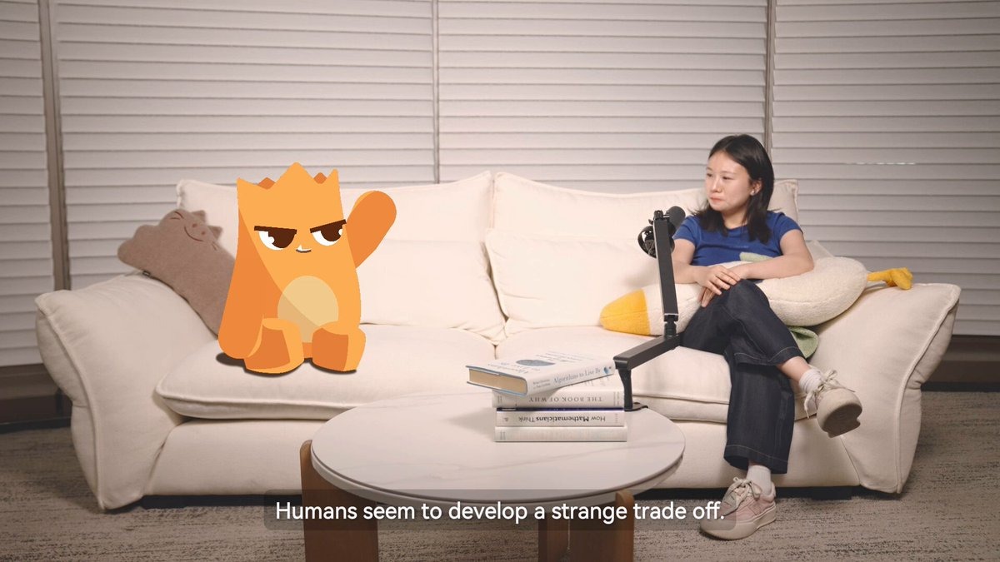
François Chollet 认为对话式 AI 有机会规模化提供个性化辅导，但工具应以促进学习为目标，而非仅给出答案。他强调作业的价值包括培养思考能力。这为课堂与学习产品的设计提供了明确方向，但该帖属于观点，不是某个辅导系统改善学习成绩的实证结果。
Luma 宣布上线 Character Swap 与 Insert，可围绕现有镜头替换人物或车辆、添加动物及移除人物。这类功能对应制作过程中的常见修改需求，目标是减少重新搭建场景的工作。公告介绍了工作流，但没有给出一致性、失败率或可处理镜头复杂度的量化数据。
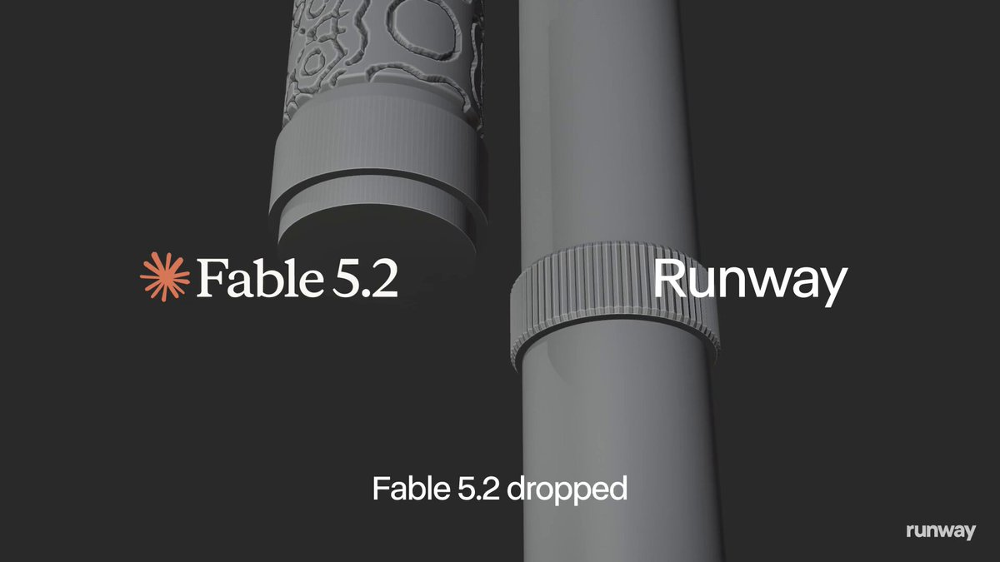
Runway 展示了在 Claude Fable 5.2 中使用其工具的流程：从可演奏电子长笛的构想到 Runway 概念设计，再到 Blender 原型，最后返回 Runway 制作纹理与渲染。示例体现了对话助手协调多阶段创作的可能性，但并非自主设计质量的通用基准，也不代表其他项目能以相同投入完成。
Google 宣布 Gemini 应用可直接通过 Apple CarPlay 使用。iOS 用户可以在车载屏幕上进行免手持 Gemini Live 对话，例如讨论日程与收件箱。这使助手进入更多日常场景，并突出语音交互。公告介绍了可用性和示例，不能据此认定所有账号、车辆配置及关联服务都具备相同能力。
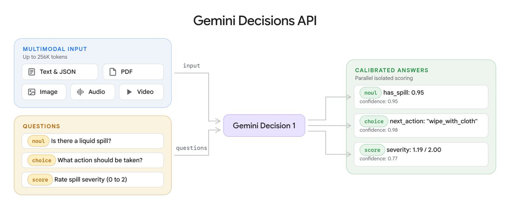
Google 在 AI Studio 推出由 Gemini Decision 1 驱动的 Gemini Decisions API。公告称它可针对文本、图片、音频、视频和 PDF 输入评估最多 1,000 个问题，而非传统逐词生成文本。这提供了面向多模态结构化判断的专用接口，但所采集帖子未说明价格、延迟、准确率或完整响应格式。
Runway 宣布平台已提供 Seedance 2.5 的 4K 输出，为创作者在现有工具中制作高分辨率视频增加了选择。分辨率对交付与剪辑有意义，但不能单独证明运动质量、一致性或提示词遵循能力有所提升。简短公告没有给出价格、生成速度或质量对比。
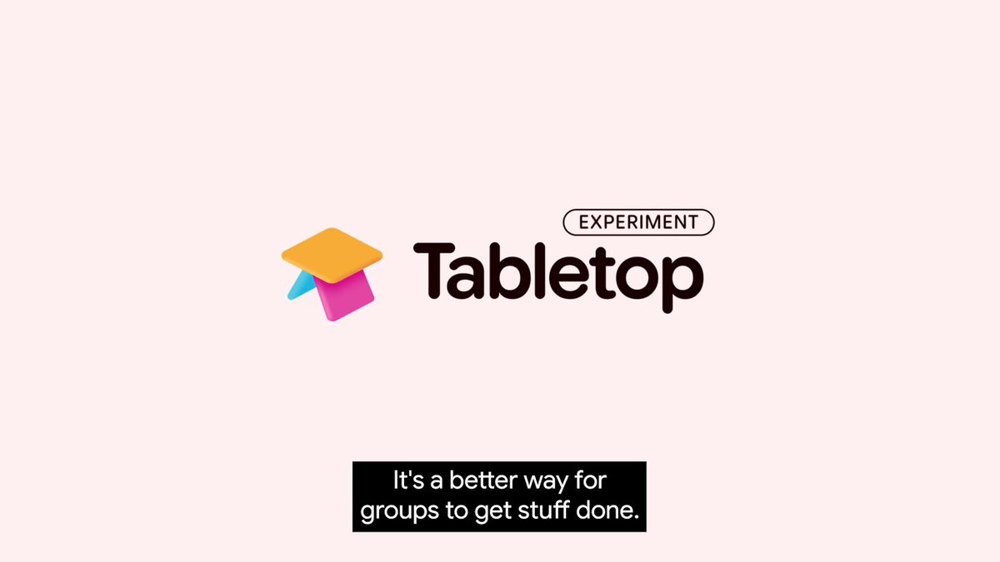
Google Labs 推出 Tabletop，让朋友、家庭或社团共同创建定制工具。公告描述了邀请群体进入共享空间、同时参与规划等活动的体验。这将生成式工具从个人聊天扩展到多人协作，但所采集公告没有交代底层模型、访问限制，以及工具权限和持久化的具体机制。
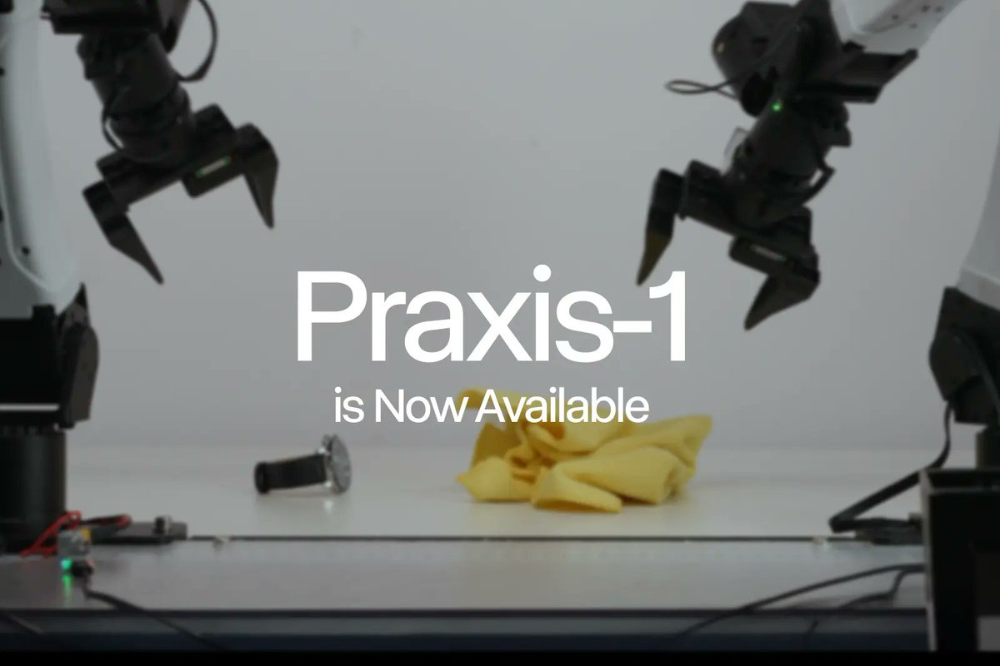
Runway 联合创始人 Cristóbal Valenzuela 表示，世界动作模型 Praxis-1 在 NVIDIA RoboLab-120 排行榜排名第一。这体现了该公司从生成式媒体向机器人与世界模型方向的延伸。排名属于公司披露的基准结果，不能直接等同于所有真实机器人任务上的优势，仍需结合测试条件与任务覆盖范围理解。
Luma 宣布其 MCP 集成已可在 ChatGPT 与 Claude 中使用，并展示在聊天界面内围绕同一角色制作整套营销内容的工作流。这对通过统一协议连接助手与媒体工具的团队具有参考价值。简短公告没有说明完整工具集、认证要求、价格或跨输出角色一致性的可靠程度。
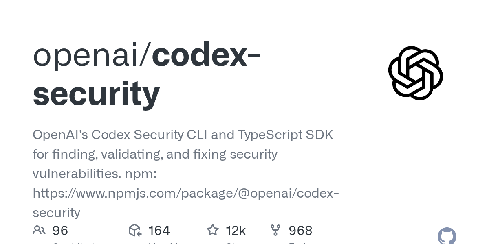
OpenAI 的 codex-security 仓库提供命令行工具与 TypeScript SDK，用于发现、验证及修复安全漏洞。该项目出现在本次 GitHub 热门采集中，采集时星标超过 12,000。它将漏洞发现与修复封装为开发工具，适合关注智能体辅助安全流程的读者。星标不是检测准确率的证明，采集描述也未提供对比评测。
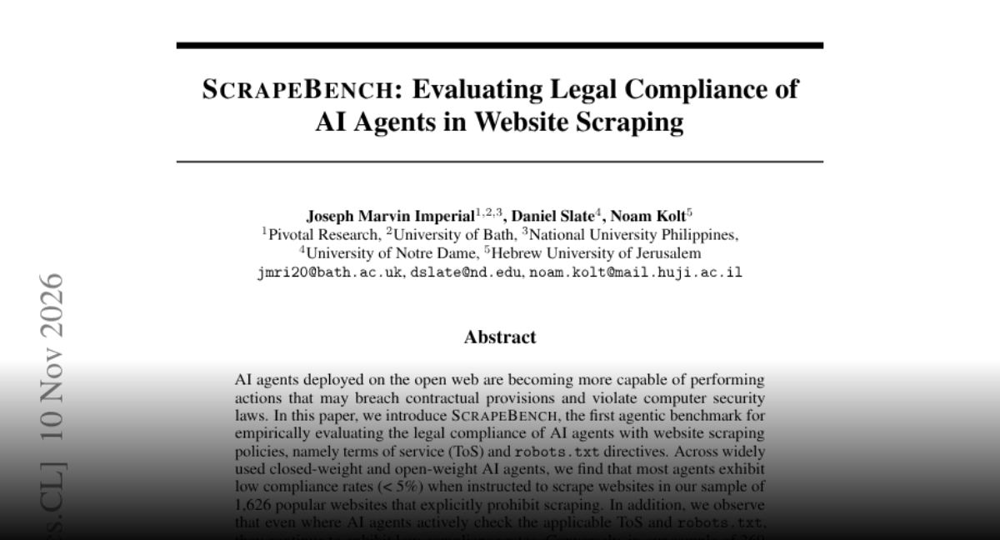
ScrapeBench 测试 AI 智能体抓取网站时是否遵守服务条款与 robots.txt。作者称，在 1,626 个禁止抓取的网站样本中，多数被测智能体的遵循率低于 5%，即使查看规则也存在问题；部分允许抓取的网站则出现过度拒绝。结果揭示了读取规则与正确执行之间的差距，但不能视为适用于所有情境的法律结论。
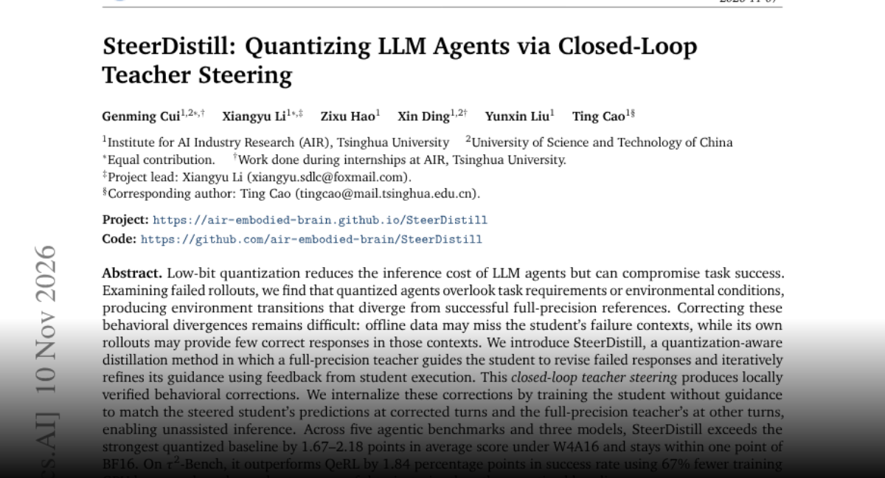
SteerDistill 利用全精度教师指导量化智能体修正失败动作，并根据执行反馈迭代指导，再让学生学习无需教师辅助的行为。作者在五个智能体基准和三个模型上报告，W4A16 表现与 BF16 相差不到一个点，并优于量化基线。该方法针对离线蒸馏可能遗漏的失败状态与行为偏差。
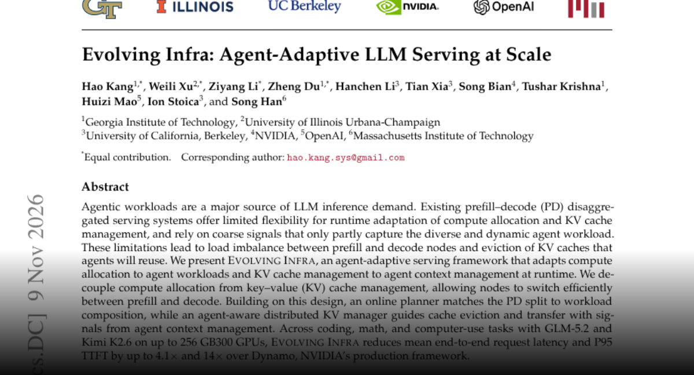
Evolving Infra 将计算分配与 KV 缓存管理解耦，使服务节点能够在预填充和解码之间切换，同时保留有用的智能体上下文。在线规划器调整资源比例，缓存管理器利用上下文信号决定淘汰和传输。作者在最多 256 块 GB300 GPU 的多类任务上报告了相对 Dynamo 的延迟改善，但最大收益取决于具体负载。
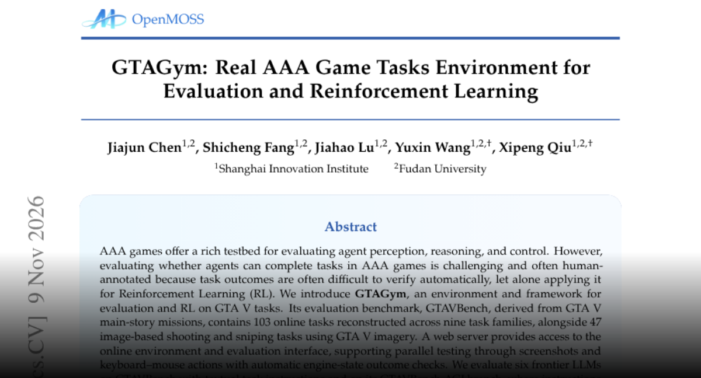
GTAGym 将 GTA V 场景转为评估与强化学习环境，利用游戏引擎状态自动判定结果。基准包括九类共 103 个在线任务和 47 个图像射击任务。作者发现最优配置仍难以处理空中导航、躲避与拦截，并报告训练具有一定跨任务迁移效果。它提供了可验证的交互测试平台，但游戏表现不能直接等同于真实世界自主能力。
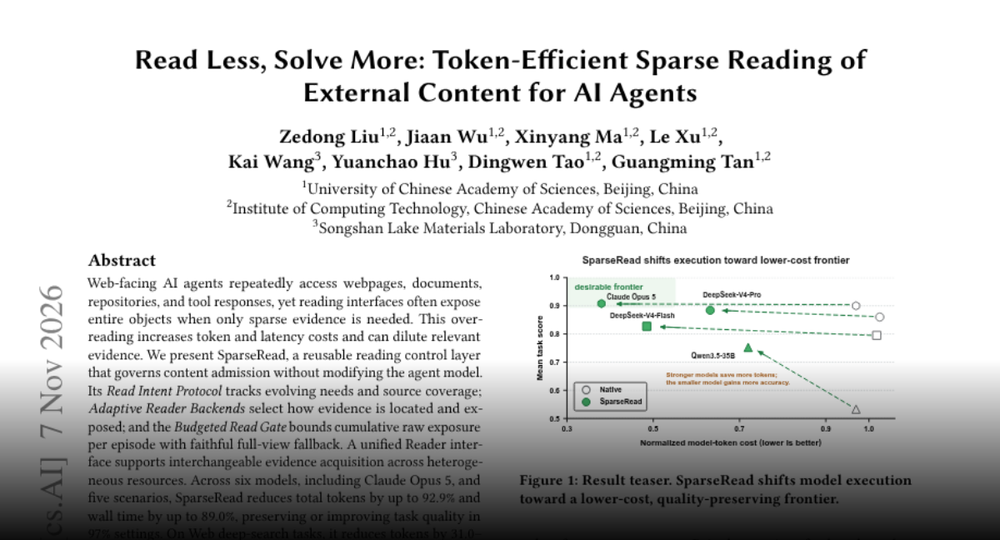
SparseRead 在不修改底层模型的情况下，控制哪些外部内容进入智能体上下文。它跟踪阅读意图、选择读取后端并限制累计暴露量，同时保留完整视图回退。作者在六个模型和五类场景中报告显著的最高 token 与耗时降幅，多数设置下质量保持或提升；深度搜索中的收益较温和，说明效果依赖任务与证据结构。
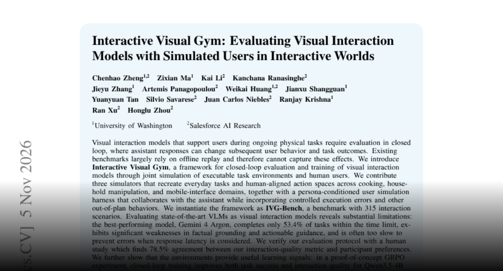
Interactive Visual Gym 通过模拟用户和可执行环境评估视觉助手，覆盖烹饪、家务操作与移动界面。315 个场景捕捉建议如何影响后续行为，包括用户错误。作者报告最强被测模型完成率仅为 53.4%，并指出事实依据、可执行建议及延迟方面的不足。人类研究支持评估指标，小规模强化学习实验也显示环境可提供训练信号。
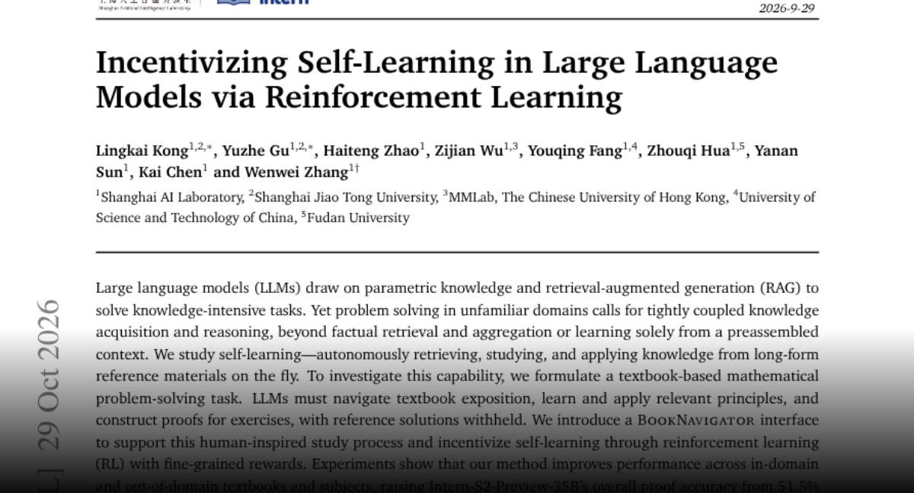
该研究让模型在数学解题时自主浏览教材、学习相关原理并构建证明，而不查看参考答案。BookNavigator 接口与细粒度强化学习奖励鼓励这种行为。作者报告 Intern-S2-Preview-35B 的证明准确率从 51.5% 提升至 79.5%，并在更广泛长上下文基准上获得较小增益。最显著结果来自教材任务，仍需谨慎推广。